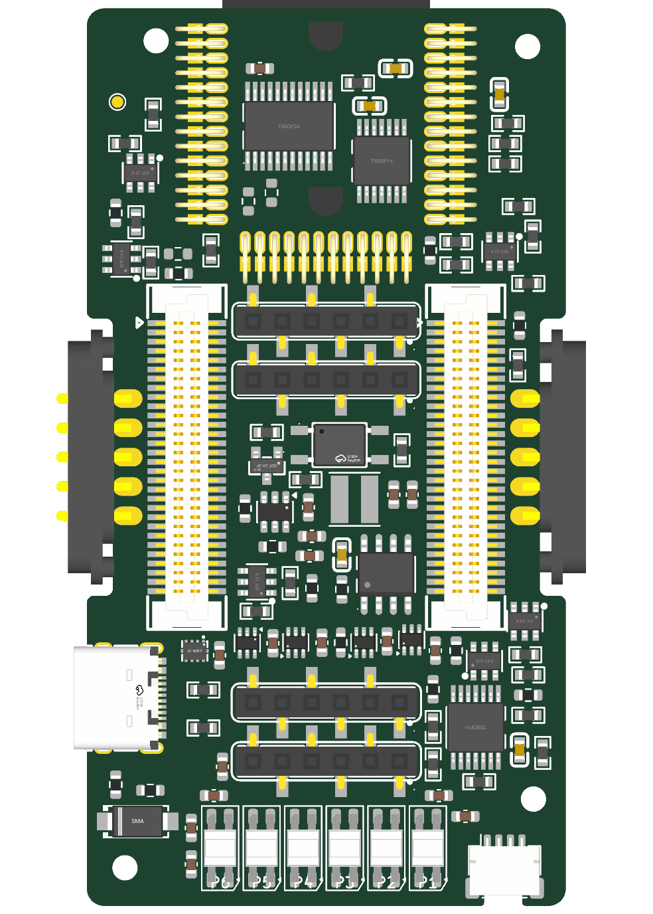

3 novembre 2026. Ambito: sola Backbone. Nessuna modifica alla mezzanina, al pinout o al valore dei componenti.
31 GPIO raggiungono direttamente J10/J11. Di questi, 16 collegano esclusivamente ESP e connettore, senza carichi sulla Backbone: 13 non sono strapping, 3 (GPIO3, GPIO45, GPIO46) richiedono attenzione al reset. Sono riutilizzabili nel progetto del nuovo modulo e nel firmware; non sono 16 segnali liberi aggiuntivi mantenendo tutte le funzioni indicate dai nomi delle net.
GPIO43/44 sono UART0: considerare l'attivita al boot e la configurazione firmware. GPIO35/36/37 sono ulteriori collegamenti opzionali tramite R112/R113/R114 DNP: non conteggiati nei 16, e non disponibili quando occupati dalla memoria Octal del modulo ESP. Tre contatti NC J11.53, J11.54 e J11.56 non sono collegati all'ESP: non sono GPIO spare.
| GPIO | Net attuale | Contatto | Connessione | Vincoli |
|---|---|---|---|---|
| 0 | BOOT | J10.28 | Condiviso con circuiti Backbone | Reset/strapping: verificare livelli al reset |
| 1 | A4 | J10.21 | Condiviso con circuiti Backbone | |
| 2 | A5 | J10.24 | Condiviso con circuiti Backbone | |
| 3 | IO3 | J10.53 | Solo ESP e connettore | Reset/strapping: verificare livelli al reset |
| 4 | IO4 | J10.54 | Condiviso con circuiti Backbone | |
| 5 | IO5 | J11.7 | Condiviso con circuiti Backbone | |
| 6 | MEAS_S0 | J11.12 | Solo ESP e connettore | |
| 7 | A0 | J10.6 | Condiviso con circuiti Backbone | |
| 8 | A1 | J10.9 | Condiviso con circuiti Backbone | |
| 9 | A2 | J10.13 | Condiviso con circuiti Backbone | |
| 10 | A3 | J10.17 | Condiviso con circuiti Backbone | |
| 11 | EXT_SPI_CS_N | J10.52 | Solo ESP e connettore | |
| 12 | MEAS_S1 | J11.13 | Solo ESP e connettore | |
| 13 | CTRL13 | J10.41 | Solo ESP e connettore | |
| 14 | CTRL14 | J10.42 | Solo ESP e connettore | |
| 15 | ESP_AG_BOOT0 | J10.29 | Solo ESP e connettore | |
| 16 | ESP_AG_RESET_N | J10.31 | Solo ESP e connettore | |
| 17 | ESP_CAN_TX | J10.47 | Condiviso con circuiti Backbone | |
| 18 | CAN_RX | J10.39 | Condiviso con circuiti Backbone | |
| 21 | ESP_LED_DATA | J10.51 | Condiviso con circuiti Backbone | |
| 38 | MEZZ_PRESENT_N | J11.17 | Condiviso con circuiti Backbone | |
| 39 | ESP_ISO4_N | J10.48 | Condiviso con circuiti Backbone | |
| 40 | ESP_ISO5_N | J10.49 | Condiviso con circuiti Backbone | |
| 41 | MEAS_S2 | J11.14 | Solo ESP e connettore | |
| 42 | MEAS_INHIBIT | J11.11 | Solo ESP e connettore | |
| 43 | SPI_MOSI | J11.19 | Solo ESP e connettore | UART0: considerare messaggi di boot e firmware |
| 44 | SPI_MISO | J11.18 | Solo ESP e connettore | UART0: considerare messaggi di boot e firmware |
| 45 | IO45 | J10.56 | Solo ESP e connettore | Reset/strapping: verificare livelli al reset |
| 46 | IO46 | J11.6 | Solo ESP e connettore | Reset/strapping: verificare livelli al reset |
| 47 | ESP_PROG_TX | J10.33 | Solo ESP e connettore | |
| 48 | ESP_PROG_RX | J10.32 | Solo ESP e connettore |
R58 (shunt del canale A2) spostato da (183,50; 77,50) mm, -180°, a (184,50; 89,75) mm, -90°, sul Top. Tutti gli altri footprint, compresi quelli bloccati e quelli esclusi dalla scheda, restano esattamente invariati.
Distanze geometriche fra piazzole, non lunghezze finali delle piste: verso i due contatti J10 da 31,37/30,45 a 27,18/27,03 mm; verso il MOSFET Q5 da 7,42 a 5,16 mm; verso J18 da 48,84 a 37,19 mm. Migliorano tutte e quattro. Scartati gli spostamenti di R57 e R60 che allungavano il percorso verso il MOSFET; scartato quello trascurabile di R61. R58 rimane fuori dalle zone riservate all'antenna, all'accesso FlexyPin e all'alimentatore.
Conservati R56–R61 da 0,1 ohm, due terminali, 0603, 1%, 100 ppm/°C. Non emerge una necessita di sostituirli per correggere il collegamento Kelvin: nessun acquisto AliExpress necessario per questa modifica. Per precisioni superiori sara necessario definire il campo di misura e valutare tolleranza, deriva e calibrazione; un modulo piu preciso non elimina gli errori della resistenza e del cablaggio della carrier.
Durante lo sbroglio prelevare i due segnali di misura direttamente dalle rispettive piazzole dello shunt con rami dedicati che non trasportino corrente di carico; evitare di prelevarli a valle di piste di forza o di condividere vias di potenza. Mantenere i due segnali vicini, sopra un ritorno continuo, lontani dal nodo di commutazione dell'alimentatore e da segnali digitali veloci. La misura della tensione sulla porta esterna deve riferirsi al punto di interesse, distinto dal prelievo sullo shunt.
Limite non risolto dalla disposizione: sul pinout attuale, N_A0–N_A5 possono condividere il contatto di misura con la corrente erogata dal futuro modulo. In tale modalita il collegamento non e Kelvin completo fino al modulo. Non e stata applicata la precedente proposta di riassegnare i contatti dei gate. Per ottenere quella prestazione occorrera decidere l'interfaccia carrier/modulo prima del routing definitivo delle misure; la sola sostituzione dello shunt non basta. La revisione precedente resta disponibile in ../measurement-review-20261103/review.html.
115 footprint verificati; solo R58 cambia posizione e orientamento. Identiche net, geometrie delle piazzole, modelli, layer, elementi bloccati e oggetti di scheda. DRC: stesse 155 violazioni, anche per identita degli oggetti, e 453 connessioni da sbrogliare. Nessun nuovo corto, errore di clearance o ponte di solder mask. Non e una validazione della precisione o dell'integrita del segnale a routing completato. Schematici e file mezzanina invariati, verificati tramite hash.
Espressif: strapping, UART e memoria Octal; TI INA226: layout e misura dello shunt.
